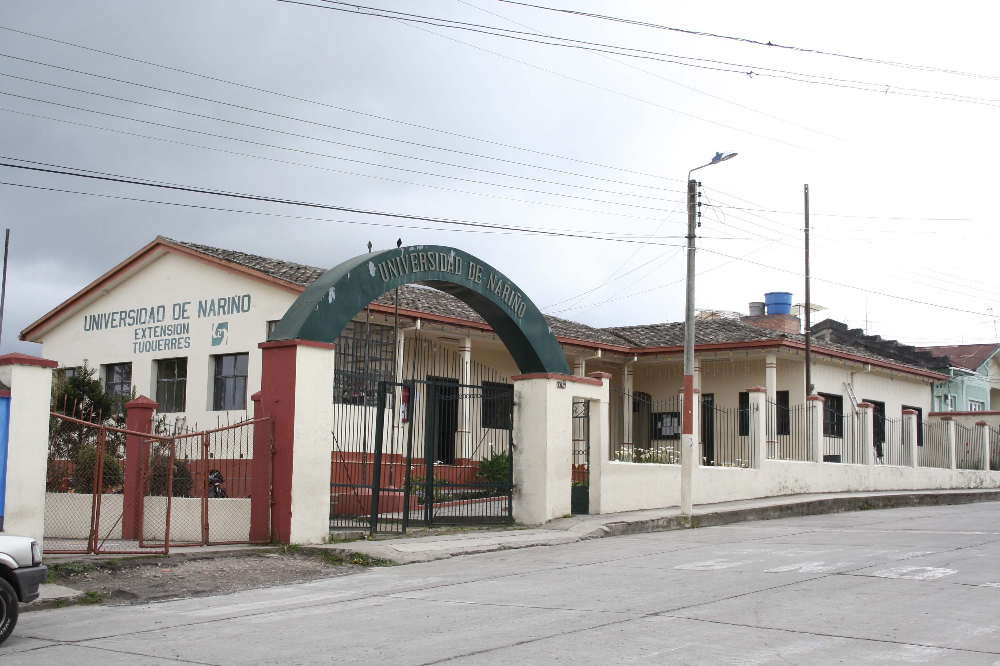
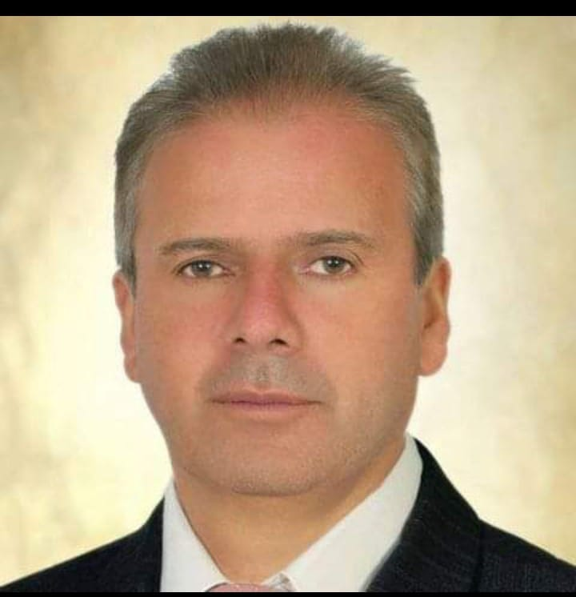
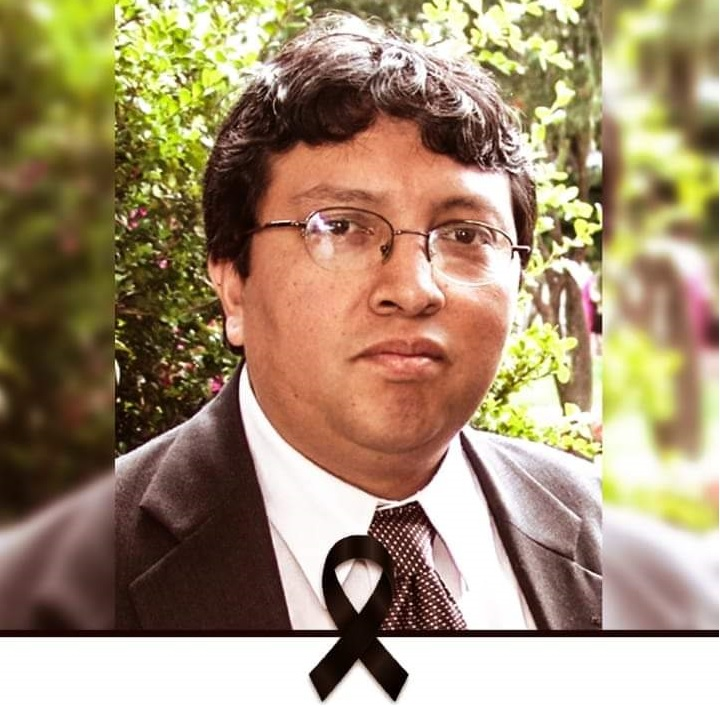
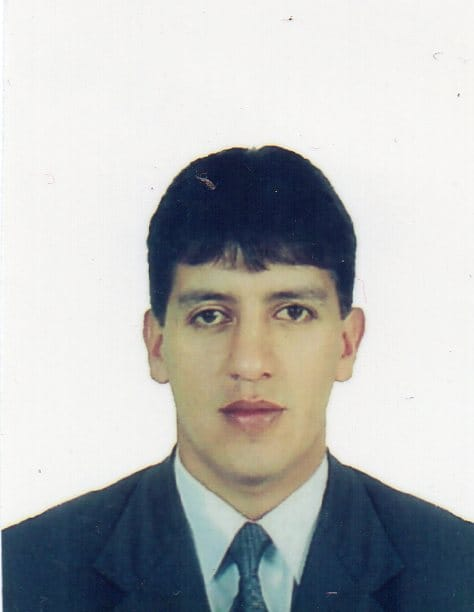
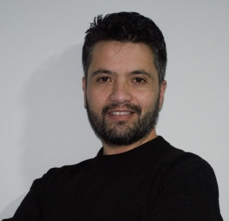

La Universidad de Nariño en el municipio de Túquerres, es una extensión universitaria que hace parte de la red de sedes regionales de la Universidad de Nariño, creada con el propósito de ampliar la cobertura de la educación superior en el departamento de Nariño y contribuir al desarrollo social, económico y cultural de la región. La sede se encuentra ubicada en el sur del departamento, en una zona estratégica que permite atender a estudiantes de diversas comunidades rurales y urbanas.
Cargando...




